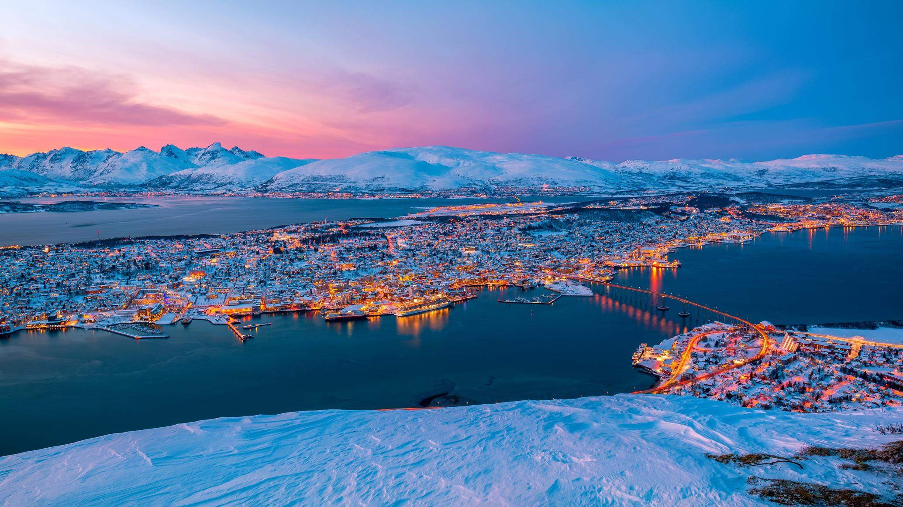
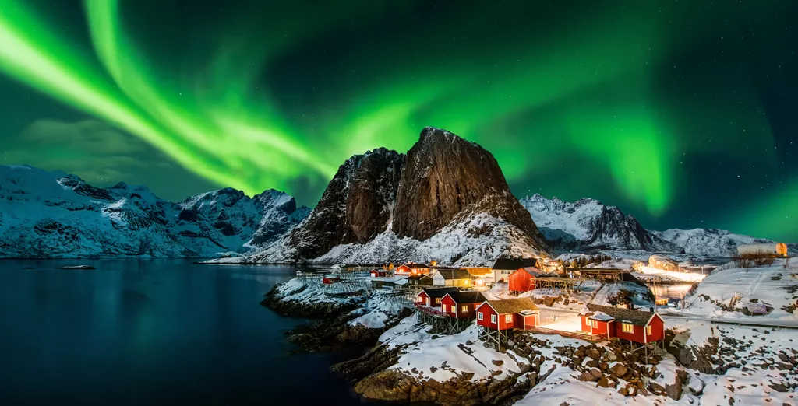
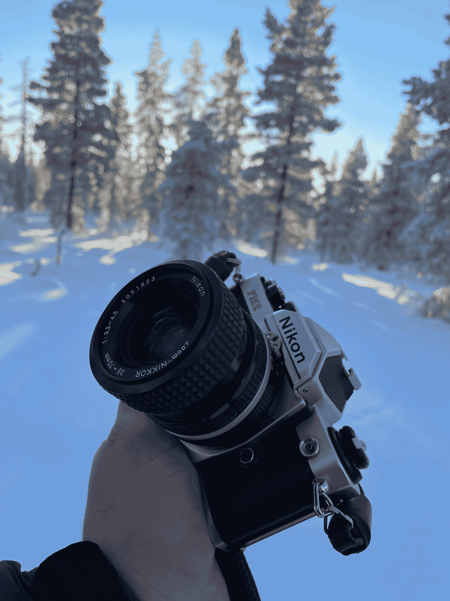
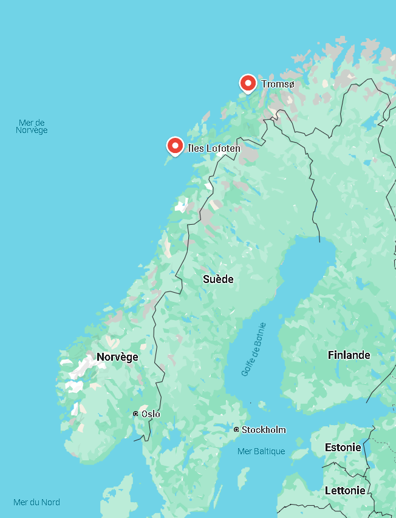

Les aurores boréales, ces phénomènes naturels causés par l'interaction entre les particules solaires et le champ magnétique terrestre, captivent les voyageurs du monde entier. La Norvège offre des conditions idéales pour observer la danse des lumières vertes ou violettes qui illumine les cieux hivernaux.
Nous vous invitons ici à découvrir Tromsø et les Îles Lofoten, lieux situés dans la Laponie norvégienne dans le cercle polaire arctique. Abritant des paysages spectaculaires et des activités hivernales uniques, ces sites sont parfaits pour admirer les aurores boréales et vivre une aventure inoubliable dans le Grand Nord.
TromsøSouvent surnommée la "capitale des aurores boréales", Tromsø est une destination populaire de plus de 70 000 habitants. Situé dans le comté de Troms, cette ville offre de beaux paysages et propose des activités variées, comme des visites de monuments, des balades en traîneau à Husky, ou encore des safari en motoneige. |
 |
|  |
Îles LofotenLes Îles Lofoten sont un archipel localisé dans le comté de Nordland. Elles regroupent divers villages comme Reine sur l’île Moskenesøya ou Svolvær sur l’île Vågan, se trouvant sur la bande côtière qui est la seule partie assez habitable. Composés de paysages aux reliefs escarpés avec des montagnes et des fjords, ces îles figurent régulièrement dans divers palmarès des plus belles îles au monde. |
Vous pourrez y visiter des villages de pêcheurs ou faire des randonnées en raquette.
Pour l’hébergement, le rorbu est conseillé. C’est une cabane de pêcheurs sur pilotis
traditionnelle, pratique et chaleureuse pour séjourner en hiver.
Observation des aurores boréalesAfin de maximiser vos chances d’apercevoir les aurores boréales, vous pouvez vérifier les données de l’activité géomagnétique sur des applications comme Aurora Alerts ou My Aurora Forecast. La meilleure période de l’année pour les observer est de Décembre à Février, et l’heure la plus propice est de 18h à 2h du matin. Le mieux est donc de profiter de l’endroit en journée (même si la lumière du jour est rare à cette période), et d’essayer de voir les aurores le soir. Trouvez un endroit en dehors des lumières artificielles, armez vous de patience et enfin les aurores boréales s’offriront à vous. Pour immortaliser le moment, munissez-vous d’un bon appareil photo ou d’un smartphone haut de gamme avec mode nuit. |
 |
|  |
AccessibilitéLa majorité des villes en Norvège possèdent un réseau de bus développé, qui est le moyen de transport le moins cher. Vous pouvez aussi louer une voiture avec des tarifs abordables. Pour accéder à Tromsø ou aux ïles Lofoten depuis l’extérieur, le plus pratique est l’avion, mais le moins cher reste le train. ClimatLes températures dans le nord de la Norvège sur les littoraux peuvent descendre jusqu’à -10°C en hiver, prévoyez donc des vêtements chauds. |